<img src="img/iri_wam.jpg" width="500" />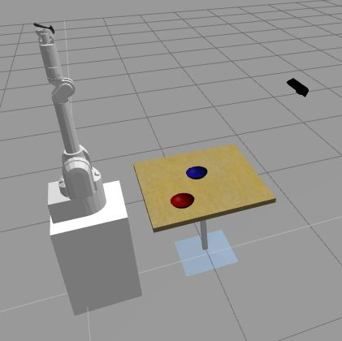
<!-- <img src="img/rosject.png" width="250" style="float:left;" /> --><!--* ROSject Link: http://bit.ly/2n8FZcL* Package Name: **iri_wam_gazebo*** Launch File: **main.launch**--><b>Estimated time of completion:</b> 1.5 hours<br><br><b>What will you learn with this unit?</b>* How can ROS What the F*ck help you debug* Add Debugging ROS logs* Filter ROS logs* Record and replay sensory data* Plot Topic Data* Draw connections between different nodes of your system* Basic use of RViz debugging toolEstimated time of completion: 1.5 hours
What will you learn with this unit?
One of the most difficult, but important, parts of robotics is: **knowing how to turn your ideas and knowledge into real projects**. There is a constant in robotics projects: **nothing works as in theory**. Reality is much more complex and, therefore, you need tools to discover what is going on and find where the problem is.That's why debugging and visualization tools are essential in robotics, especially when working with complex data formats such as **images**, **laser-scans**, **pointclouds** or **kinematic data**. Examples are shown in <a href="#fig-5.i">{Fig-5.i}</a> and <a href="#fig-5.ii">{Fig-5.ii}</a><i>.One of the most difficult, but important, parts of robotics is: knowing how to turn your ideas and knowledge into real projects. There is a constant in robotics projects: nothing works as in theory. Reality is much more complex and, therefore, you need tools to discover what is going on and find where the problem is. That's why debugging and visualization tools are essential in robotics, especially when working with complex data formats such as images, laser-scans, pointclouds or kinematic data. Examples are shown in {Fig-5.i} and {Fig-5.ii}.
<img id="fig-5.i" src="img/rviz_example1.jpg"></img><center><figcaption>Fig.5.i - Atlas Laser</figcaption></center>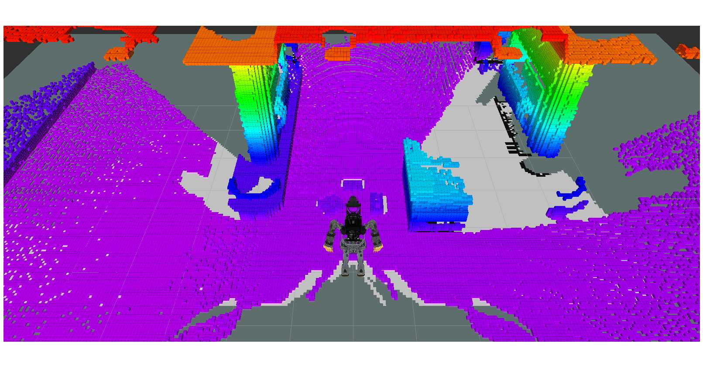
<img id="fig-5.ii" src="img/rviz_example2.jpg"></img><center> <figcaption>Fig.5.ii - PR2 Laser and PointCloud</figcaption></center>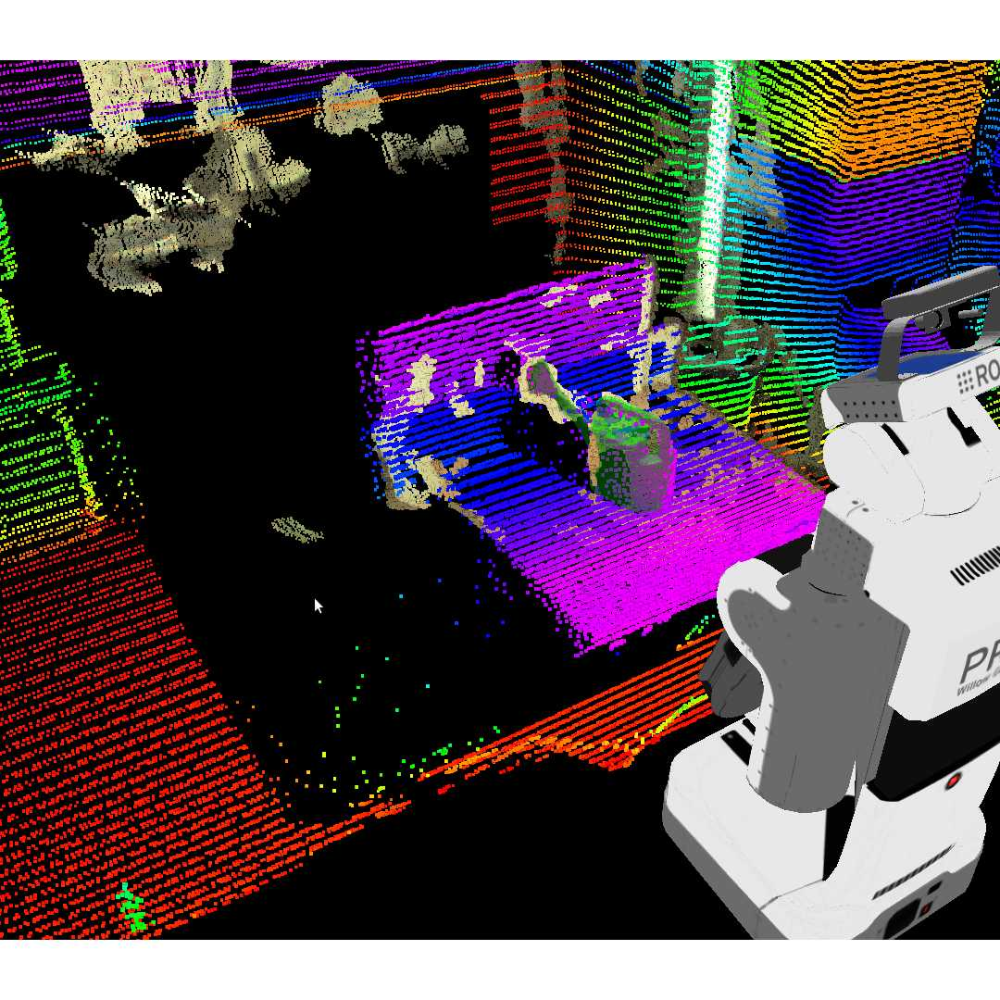
So here you will be presented with the most important tools for debugging your code and visualizing what is really happening in your robot system.So here you will be presented with the most important tools for debugging your code and visualizing what is really happening in your robot system.
It seems like a joke, but it isn't! <b><i>Roswtf</i></b> is a great tool to shed some light when you really don't know where to start solving a problem. It seems like a joke, but it isn't! Roswtf is a great tool to shed some light when you really don't know where to start solving a problem.
<table style="float:left;"><tr><th>Go to the WebShell and type the following command:<br></th></tr></table>|
Go to the WebShell and type the following command: |
|---|
<table style="float:left;background: #407EAF"><tr><th><p class="transparent">Execute in WebShell #1</p></th></tr></table>|
Execute in WebShell #1 |
|---|
roswtf<p style="background: #407EAF">WebShell #1 Output</p>WebShell #1 Output
user ~ $ roswtfthe rosdep view is empty: call 'sudo rosdep init' and 'rosdep update'No package or stack in context================================================================================Static checks summary:Found 1 error(s).ERROR ROS Dep database not initialized: Please initialize rosdep database with sudo rosdep init.================================================================================Beginning tests of your ROS graph. These may take awhile...analyzing graph...... done analyzing graphrunning graph rules...... done running graph rulesOnline checks summary:Found 2 warning(s).Warnings are things that may be just fine, but are sometimes at faultWARNING The following node subscriptions are unconnected: * /gazebo: * /gazebo/set_model_state * /gazebo/set_link_state * /iri_wam/iri_wam_controller/follow_joint_trajectory/cancel * /iri_wam/iri_wam_controller/follow_joint_trajectory/goal * /iri_wam/e_stop * /iri_wam/iri_wam_controller/commandWARNING These nodes have died: * urdf_spawner-4In this particular case, it tells you <a href="#webshell-out-5.1">{webshell-out-5.1}</a> that the package <i>rosdep</i> hasn't been initialised, so you may have issues installing new ROS packages from the Internet. In this case, there is no problem because the system you are using (Robot Ignite Academy system) is not meant for installing anything.<br><br>And this takes us to the question: <b>What does <i>roswtf</i> do?</b>In this particular case, it tells you {webshell-out-5.1} that the package rosdep hasn't been initialised, so you may have issues installing new ROS packages from the Internet. In this case, there is no problem because the system you are using (Robot Ignite Academy system) is not meant for installing anything.
And this takes us to the question: What does roswtf do?
By default, it checks <b>two</b> ROS fields: * <b>File-system issues:</b> It checks enviromental variables, packages, and launch files, among other things. It looks for any inconsistencies that might be errors. You can use the command <i>roswtf</i> alone to get the system global status. But you can also use it to check particular <i>launch files</i> before using them. By default, it checks two ROS fields:
<table style="float:left;"><tr><th>Go to the WebShell and type the following command:<br></th></tr></table>|
Go to the WebShell and type the following command: |
|---|
<table style="float:left;background: #407EAF"><tr><th><p class="transparent">Execute in WebShell #1</p></th></tr></table>|
Execute in WebShell #1 |
|---|
roslaunch iri_wam_aff_demo false_start_demo.launch<p style="background: #407EAF">WebShell #1 Output</p>WebShell #1 Output
user ~ $ roslaunch iri_wam_aff_demo false_start_demo.launch... logging to /home/user/.ros/log/fd58c97c-9068-11e6-9889-02c6d37ebbf9/roslaunch-ip-172-31-20-234-12087.logChecking log directory for disk usage. This may take awhile.Press Ctrl-C to interruptDone checking log file disk usage. Usage is <1GB.started roslaunch server http://ip-172-31-20-234:38217/SUMMARY========PARAMETERS * /rosdistro: indigo * /rosversion: 1.11.20NODES / iri_wam_aff_demo (iri_wam_reproduce_trajectory/iri_wam_aff_demo_node) iri_wam_reproduce_trajectory (iri_wam_reproduce_trajectory/iri_wam_reproduce_trajectory_node)ROS_MASTER_URI=http://localhost:11311core service [/rosout] foundprocess[iri_wam_reproduce_trajectory-1]: started with pid [12111]ERROR: cannot launch node of type [iri_wam_reproduce_trajectory/iri_wam_aff_demo_node]: can't locate node[iri_wam_aff_demo_node] in package [iri_wam_reproduce_trajectory]Any clue? It just tells you that it can't locate your <i>iri_wam_aff_demo_node</i>. Now try <b>roswtf</b> on that launch file to get a bit more information on what might be the problem:Any clue? It just tells you that it can't locate your iri_wam_aff_demo_node. Now try roswtf on that launch file to get a bit more information on what might be the problem:
<table style="float:left;"><tr><th>Go to the WebShell and type the following commands:<br></th></tr></table>|
Go to the WebShell and type the following commands: |
|---|
<table style="float:left;background: #407EAF"><tr><th><p class="transparent">Execute in WebShell #1</p></th></tr></table>|
Execute in WebShell #1 |
|---|
roscd iri_wam_aff_demo/launchroswtf false_start_demo.launch<p style="background: #407EAF">WebShell #1 Output</p>WebShell #1 Output
user launch $ roswtf false_start_demo.launchthe rosdep view is empty: call 'sudo rosdep init' and 'rosdep update'[rospack] Error: the rosdep view is empty: call 'sudo rosdep init' and 'rosdep update'================================================================================Static checks summary:Found 2 error(s).ERROR ROS Dep database not initialized: Please initialize rosdep database with sudo rosdep init.ERROR Several nodes in your launch file could not be located. These are either typed incorrectly or need to be built: * node [iri_wam_aff_demo_node] in package [iri_wam_reproduce_trajectory]To make **<i>roswtf yourlaunchfile.launch</i>** work, you need to go to the path where the file is. That's why you had to use the **<i>roscd</i>** command.<br>The error shown above it is telling you that **<i>roswtf</i>** can't find the **<i>iri_wam_aff_demo_node</i>**. It states that because it's a binary, it might be that you haven't compiled it yet or that you spelt something wrong. Essentially, it's telling you that there is no node **<i>iri_wam_aff_demo_node</i>** in the package **<i>iri_wam_reproduce_trajectory</i>**.<br>To make roswtf yourlaunchfile.launch work, you need to go to the path where the file is. That's why you had to use the roscd command.
The error shown above it is telling you that roswtf can't find the iri_wam_aff_demo_node. It states that because it's a binary, it might be that you haven't compiled it yet or that you spelt something wrong. Essentially, it's telling you that there is no node iri_wam_aff_demo_node in the package iri_wam_reproduce_trajectory.
* **Online/graph issues**: **roswtf** also checks for any inconsistencies in the connections between nodes, topics, actions, and so on. It warns you if something is not connected or it's connected where it shouldn't be. **These warnings aren't necessarily errors**. They are simply things that ROS finds odd. It's up to you to know if it's an error or if it's just the way your project is wired.<table style="float:left;"><tr><th>Go to the WebShell and type the following command:<br></th></tr></table>|
Go to the WebShell and type the following command: |
|---|
<table style="float:left;background: #407EAF"><tr><th><p class="transparent">Execute in WebShell #1</p></th></tr></table>|
Execute in WebShell #1 |
|---|
roswtf<p style="background: #407EAF">WebShell #1 Output</p>WebShell #1 Output
user ~ $ roswtfthe rosdep view is empty: call 'sudo rosdep init' and 'rosdep update'No package or stack in context================================================================================Static checks summary:Found 1 error(s).ERROR ROS Dep database not initialized: Please initialize rosdep database with sudo rosdep init.================================================================================Beginning tests of your ROS graph. These may take awhile...analyzing graph...... done analyzing graphrunning graph rules...... done running graph rulesOnline checks summary:Found 2 warning(s).Warnings are things that may be just fine, but are sometimes at faultWARNING The following node subscriptions are unconnected: * /gazebo: * /gazebo/set_model_state * /gazebo/set_link_state * /iri_wam/iri_wam_controller/follow_joint_trajectory/cancel * /iri_wam/iri_wam_controller/follow_joint_trajectory/goal * /iri_wam/e_stop * /iri_wam/iri_wam_controller/commandWARNING These nodes have died: * urdf_spawner-4You executed this command at the start, but you didn't pay attention to the lower part warnings. These warnings are <i>Graph issues</i>.* It states that some subcribers are not connected to the topics that they are meant to be connected to: This is quite normal as they might be nodes that only connect at the start or in certain moments. No error here.* The second warning states that a node has died: This also is quite normal as nodes, like in this case, that only run when they spawn objects, die after being used. But ROS is so kind that it lets you know, just in case it shouldn't work that way.You executed this command at the start, but you didn't pay attention to the lower part warnings. These warnings are Graph issues.
You have used <i>print()</i> during this course to print information about how your programs are doing. <b>Prints</b> are the <i>Dark Side of the Force</i>, so from now on, you will use a more <i>Jedi</i> way of doing things.<b>LOGS</b> are the way. Logs allow you to print them on the screen, but also to store them in the ROS framework, so you can classify, sort, filter, or else.You have used print() during this course to print information about how your programs are doing. Prints are the Dark Side of the Force, so from now on, you will use a more Jedi way of doing things. LOGS are the way. Logs allow you to print them on the screen, but also to store them in the ROS framework, so you can classify, sort, filter, or else.
In logging systems, there are always levels of logging, as shown in <a href="#fig-5.1">{Fig-5.1}</a>. In ROS logs case, there are <b>five</b> levels. Each level includes deeper levels. So, for example, if you use <b>Error</b> level, all the messages for <b>Error</b> and <b>Fatal</b> will be shown. If your level is <b>Warning</b>, then all the messages for levels <b>Warning</b>, <b>Error</b> and <b>Fatal</b> will be shown.In logging systems, there are always levels of logging, as shown in {Fig-5.1}. In ROS logs case, there are five levels. Each level includes deeper levels. So, for example, if you use Error level, all the messages for Error and Fatal will be shown. If your level is Warning, then all the messages for levels Warning, Error and Fatal will be shown.
<img src="img/log_levels_img.png" width="1000" />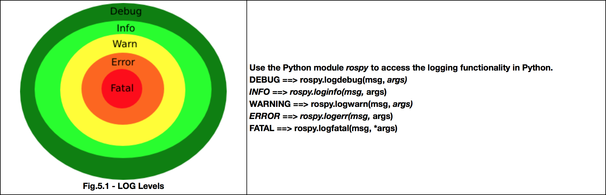
<table style="float:left;"><tr><th>Run the following Python code:<br></th></tr></table>|
Run the following Python code: |
|---|
<p style="background:#407EAF;color:white;">**Example 5.1**</p><br>Example 5.1
Execute the following Python code <a href="#example-5.1">logger_example.py</a> by clicking on it and then clicking on the play button on the top right-hand corner of the IPython notebook.<br><br> <div class='white_bg'><img src="img/font-awesome_step-forward.png" style="float:left"/><br><br></div><br>You can also press <i>[CTRL]+[Enter]</i> to execute it.Execute the following Python code logger_example.py by clicking on it and then clicking on the play button on the top right-hand corner of the IPython notebook.

<p style="background:#3B8F10;color:white;" id="example-5.1">**Python Program {5.1}: logger_example.py** </p><br>Python Program {5.1}: logger_example.py
#! /usr/bin/env pythonimport rospyimport randomimport time# Options: DEBUG, INFO, WARN, ERROR, FATALrospy.init_node('log_demo', log_level=rospy.DEBUG)rate = rospy.Rate(0.5)# In Kinetic ROS you can use this periodic log publication. We are using Indigo here, so not useable yet.#rospy.loginfo_throttle(120, "DeathStars Minute info: "+str(time.time()))while not rospy.is_shutdown(): rospy.logdebug("There is a missing droid") rospy.loginfo("The Emperors Capuchino is done") rospy.logwarn("The Revels are coming time "+str(time.time())) exhaust_number = random.randint(1,100) port_number = random.randint(1,100) rospy.logerr(" The thermal exhaust port %s, right below the main port %s", exhaust_number, port_number) rospy.logfatal("The DeathStar Is EXPLODING") rate.sleep() rospy.logfatal("END")<p style="background:#3B8F10;color:white;">**END Python Program {5.1}: logger_example.py** </p><br>END Python Program {5.1}: logger_example.py
The best place to read all of the logs issued by all of the ROS Systems is: <i>/rosout</i>The best place to read all of the logs issued by all of the ROS Systems is: /rosout
<table style="float:left;"><tr><th>Go to the WebShell and type the following command:<br></th></tr></table>|
Go to the WebShell and type the following command: |
|---|
<table style="float:left;background: #407EAF"><tr><th><p class="transparent">Execute in WebShell #1</p></th></tr></table>|
Execute in WebShell #1 |
|---|
rostopic echo /rosoutYou should see all of the ROS logs in the current nodes, running in the system.You should see all of the ROS logs in the current nodes, running in the system.
<p style="background:#407EAF;color:white;">END **Example 5.1**</p><br>END Example 5.1
<p style="background:#EE9023;color:white;" id="ex-5.1">**Exercise 5.1**</p>Exercise 5.1
1- Create a package that has a launch that launches a python file with the previous code <a href="#example-5.1">{logger_example.py}</a>.2- Change the LOG level in the rospy.init_node and see how the different messages are printed or not in /rosout topic, depending on the level selected. 1- Create a package that has a launch that launches a python file with the previous code {logger_example.py}.
2- Change the LOG level in the rospy.init_node and see how the different messages are printed or not in /rosout topic, depending on the level selected.
<p style="background:#EE9023;color:white;" id="ex-5.1">END **Exercise 5.1**</p>END Exercise 5.1
As you can see, with only one node publishing every 2 seconds, the amount of data is big. Now imagine <b>ten</b> nodes, publishing image data, laser data, using the actions, services, and publishing debug data of your DeepLearning node.It's really difficult to get the logging data that you want.<br><br>That's where <b>rqt_console</b> comes to the rescue.As you can see, with only one node publishing every 2 seconds, the amount of data is big. Now imagine ten nodes, publishing image data, laser data, using the actions, services, and publishing debug data of your DeepLearning node.
It's really difficult to get the logging data that you want.
That's where rqt_console comes to the rescue.
<table style="float:left;"><tr><th>Type in the WebShell #1 the roslaunch command for launching the <a href="#ex-5.1">Exercice 5.1</a> launch.<br> Go to the graphical interface window (hit the icon with a screen in the IDE) <br><br><div class='white_bg'><img src="img/font-awesome_desktop.png"/><br></div>And type in the WebShell #2 : <i>rqt_console</i>, to activate the GUI log printer. </th></tr></table>|
Type in the WebShell #1 the roslaunch command for launching the Exercice 5.1 launch. Go to the graphical interface window (hit the icon with a screen in the IDE)  |
|---|
<table style="float:left;background: #407EAF"><tr><th><p class="transparent">Execute in WebShell #1</p></th></tr></table>|
Execute in WebShell #1 |
|---|
roslaunch package_exercise_5p1 exercise_5p1.launch<table style="float:left;background: #407EAF"><tr><th><p class="transparent">Execute in WebShell #2</p></th></tr></table>|
Execute in WebShell #2 |
|---|
rqt_consoleYou will get a window similar to <a href="#fig-5.2">{Fig-5.2}</a> in the browser tab that opend when clicking on the icon:You will get a window similar to {Fig-5.2} in the browser tab that opend when clicking on the icon:
<img src="img/font-awesome_desktop.png"/>
<img id="fig-5.2" src="img/rqt_console_init.jpg"></img><center> <figcaption>Fig.5.2 - Rqt Console</figcaption></center>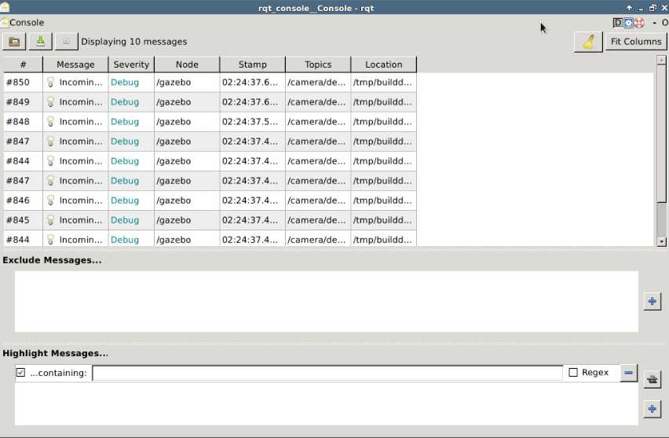
The rqt_console window is divided into three subpanels.* The first panel outputs the logs. It has data about the message, severity/level, the node generating that message, and other data. Is here where you will extract all your logs data.* The second one allows you to filter the messages issued on the first panel, excluding them based on criteria such as: node, severity level, or that it contains a certain word. To add a filter, just press the plus sign and select the desired one.* The third panel allows you to highlight certain messages, while showing the other ones. You have to also know that clicking on the tiny white gear on the right top corner, you can change the number of messages shown. Try to keep it as low as possible to avoid performance impact in your system.The rqt_console window is divided into three subpanels.
You have to also know that clicking on the tiny white gear on the right top corner, you can change the number of messages shown. Try to keep it as low as possible to avoid performance impact in your system.
<table style="float:left;"><tr><th>Filter the logs so that you only see the Warning and Fatal messages of the node from exercice 5.1</th></tr></table>| Filter the logs so that you only see the Warning and Fatal messages of the node from exercice 5.1 |
|---|
You should see something like <a href="#fig-5.3">{Fig-5.3}</a>:You should see something like {Fig-5.3}:
<img id="fig-5.3" src="img/rqt_console_filter.jpg"></img><center> <figcaption>Fig.5.3 - Rqt Console Filter</figcaption></center>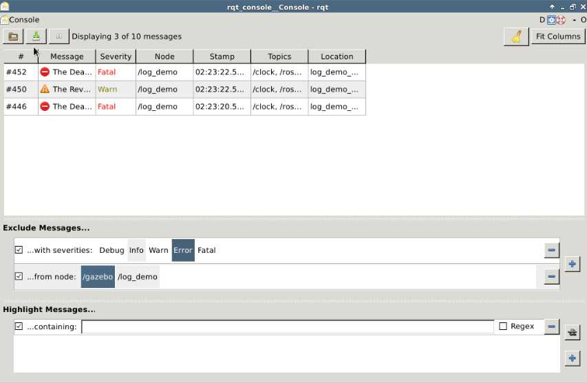
This is a very common need in any scientific discipline, but especially important in robotics. You need to know if your inclination is correct, your speed is the right one, the torque readings in an arm joint is above normal, or the laser is having anomalous readings. For all these types of data, you need a graphic tool that makes some sense of all the data you are receiving in a fast and real-time way.Here is where <b>rqt_plot</b> comes in handy.<br>This is a very common need in any scientific discipline, but especially important in robotics. You need to know if your inclination is correct, your speed is the right one, the torque readings in an arm joint is above normal, or the laser is having anomalous readings. For all these types of data, you need a graphic tool that makes some sense of all the data you are receiving in a fast and real-time way.
Here is where rqt_plot comes in handy.
<font class="ign_red"><b>To Continue you should have stopped the <a href="#ex-5.1">Exercice 5.1</a> node launched in the WebShell #1</i></b></font><br>To Continue you should have stopped the Exercice 5.1 node launched in the WebShell #1
* **Go to the WebShell and type the following command to start moving the robot arm:**<table style="float:left;background: #407EAF"><tr><th><p class="transparent">Execute in WebShell #1</p></th></tr></table>|
Execute in WebShell #1 |
|---|
roslaunch iri_wam_aff_demo start_demo.launch* **Go to another Webshell and type the following command to see the positions and the effort made by each joint of the robot arm:**<table style="float:left;background: #407EAF"><tr><th><p class="transparent">Execute in WebShell #2</p></th></tr></table>|
Execute in WebShell #2 |
|---|
rostopic echo /joint_states -n1As you can probably see, knowing what's happening in the robots joints with only arrays of numbers is quite daunting.<br><br>So let's use the <b><i>rqt_plot</i></b> command to plot the robot joints array of data.As you can probably see, knowing what's happening in the robots joints with only arrays of numbers is quite daunting.
So let's use the rqt_plot command to plot the robot joints array of data.
**Go to the graphical interface and type in a terminal the following command to open the rqt_plot GUI:****Remmember to hit [CTRL]+[C] to stop the rostopic echo**Go to the graphical interface and type in a terminal the following command to open the rqt_plot GUI:
Remmember to hit [CTRL]+[C] to stop the rostopic echo
<table style="float:left;background: #407EAF"><tr><th><p class="transparent">Execute in WebShell #2</p></th></tr></table>|
Execute in WebShell #2 |
|---|
rqt_plotYou will get a window similar to <a href="#fig-5.4">{Fig-5.4}</a>:You will get a window similar to {Fig-5.4}:
<img id="fig-5.4" src="img/rqt_plot_init.jpg"></img><center> <figcaption>Fig.5.4 - Rqt Plot</figcaption></center>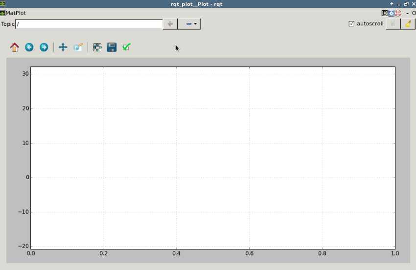
In the <i>topic</i> input located in the top-left corner of the window, you have to write the topic structure that leads to the data that you want to plot. Bear in mind that in order to be plotted, the topic has to publish a number. Once written, you press the <i class="ign_green">PLUS SIGN</i> to start ploting the Topic.<br><br>In the case that we want to plot the robot joints, we need to plot the topic <i>/joint_states</i>, which has the following structure (that you can already get by extracting the topic message type with <i>rostopic info </i>, and afterwards using <i>rosmsg show</i> command from <b>Unit 2</b>):In the topic input located in the top-left corner of the window, you have to write the topic structure that leads to the data that you want to plot. Bear in mind that in order to be plotted, the topic has to publish a number. Once written, you press the PLUS SIGN to start ploting the Topic.
In the case that we want to plot the robot joints, we need to plot the topic /joint_states, which has the following structure (that you can already get by extracting the topic message type with rostopic info , and afterwards using rosmsg show command from Unit 2):
std_msgs/Header headerstring[] namefloat64[] positionfloat64[] velocityfloat64[] effort Then, to plot the velocity of the first joint of the robot, we would have to type <i>/joint_states/velocity[0]</i>.<br><br>You can add as many plots as you want by pressing the "plus" button.Then, to plot the velocity of the first joint of the robot, we would have to type /joint_states/velocity[0].
You can add as many plots as you want by pressing the "plus" button.
<p style="background:#EE9023;color:white;" id="ex-5.2">Exercise 5.2</p>Exercise 5.2
* Plot in rqt_plot the effort made by the four first joints of the robot while it moves.<p style="background:#EE9023;color:white;" id="ex-5.2">END Exercise 5.2</p>END Exercise 5.2
Is your node connected to the right place? Why are you not receiving data from a topic?These questions are quite normal as you might have experienced already with ROS systems. <b>Rqt_graph</b> can help you figure that out in an easier way.It displays a visual graph of the nodes running in ROS and their topic connections. It's important to point out that it seems to have problems with connections that aren't topics.Is your node connected to the right place? Why are you not receiving data from a topic? These questions are quite normal as you might have experienced already with ROS systems. Rqt_graph can help you figure that out in an easier way. It displays a visual graph of the nodes running in ROS and their topic connections. It's important to point out that it seems to have problems with connections that aren't topics.
**Go to the graphical interface and type in a terminal the following command to open the rqt_graph GUI:****Remember to have in the WebShell #1 the roslaunch iri_wam_aff_demo start_demo.launch**Go to the graphical interface and type in a terminal the following command to open the rqt_graph GUI:
Remember to have in the WebShell #1 the roslaunch iri_wam_aff_demo start_demo.launch
<table style="float:left;background: #407EAF"><tr><th><p class="transparent">Execute in WebShell #2</p></th></tr></table>|
Execute in WebShell #2 |
|---|
rqt_graphYou will get something like the following image:You will get something like the following image:
<img id="fig-5.5" src="img/rqt_graph_init.jpg"/><br><center> <figcaption>Fig.5.5 - Rqt-Graph Result</figcaption></center>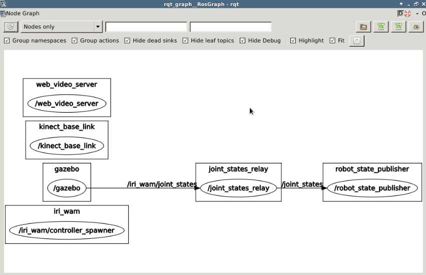
In the diagram <a href="#fig-5.5">{Fig-5.5}</a>, you will be presented with all of the nodes currently running, connected by the topics they use to communicate with each other. There are two main elements that you need to know how to use: * The <b>refresh button</b>: Which you have to press any time you have changed the nodes that are running:In the diagram {Fig-5.5}, you will be presented with all of the nodes currently running, connected by the topics they use to communicate with each other. There are two main elements that you need to know how to use:
<img src="img/refresh_rqt_graph.png"/>* The <b>filtering options</b>: These are the three boxes just beside the refresh button. The first element lets you select between only nodes or topics. The second box allows you to filter by names of nodes.<img src="img/filtering_rqt_graph.png"/>Here is an example where you filter to just show the <i>/gazebo</i> and the <i>/joint_states_relay</i> <a href="#fig-5.6">{Fig-5.6}</a>:Here is an example where you filter to just show the /gazebo and the /joint_states_relay {Fig-5.6}:
<img id="fig-5.6" src="img/rosgraph_init_filter.jpg"/><br><center> <figcaption>Fig-5.6 - Rqt-Graph Result Filtered /gazebo and /joint_states_relay</figcaption></center>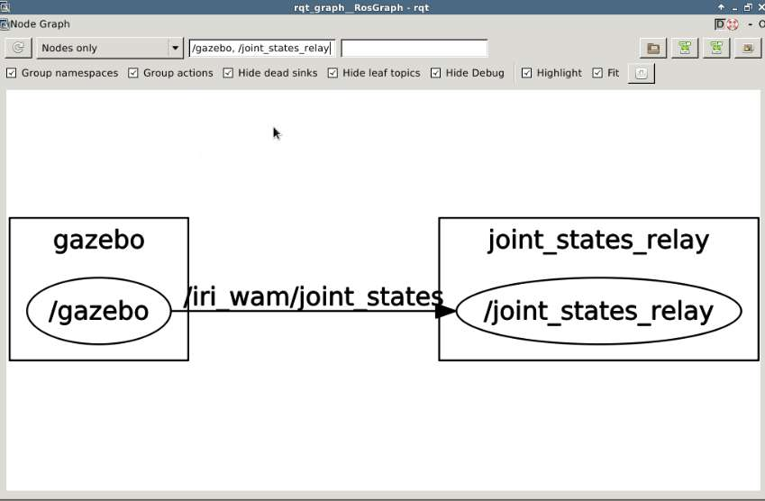
<p style="background:#EE9023;color:white;" id="ex-5.3">**Exercise 5.3**</p>Exercise 5.3
* Create a package that launches a simple Topic publisher and a subscriber, and filter the ros_graph output to show you only the two nodes and the topic you are interested in.<p style="background:#EE9023;color:white;" id="ex-5.3">END **Exercise 5.3**</p>END Exercise 5.3
You should get something like this <a href="#fig-5.7">{Fig-5.7}</a>:You should get something like this {Fig-5.7}:
<img id="fig-5.7" src="img/rqt_graph_simple.jpg"/><br><center> <figcaption>Fig-5.7 - Rqt-Graph from Exercise 5.7</figcaption></center>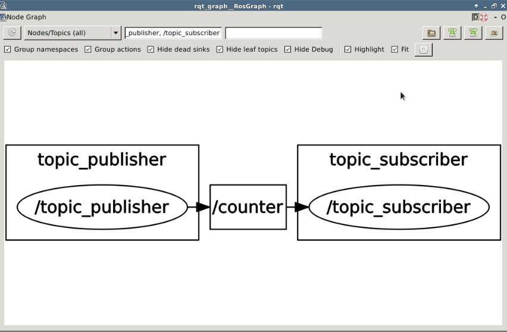
One very common scenario in robotics is the following:<br><br>You have a very expensive real robot, let's say R2-D2, and you take it to a very difficult place to get, let's say The Death Star. You execute your mission there and you go back to the base. Now, you want to reproduce the same conditions to improve R2-D2s algorithms to open doors. But you don't have the DeathStar nor R2-D2. How can you get the same exact sensory readings to make your test? Well, you record them, of course! And this is what <b>rosbag</b> does with all the ROS topics generated.It records all of the data passed through the ROS topics system and allows you to replay it any time through a simple file.One very common scenario in robotics is the following:
You have a very expensive real robot, let's say R2-D2, and you take it to a very difficult place to get, let's say The Death Star. You execute your mission there and you go back to the base. Now, you want to reproduce the same conditions to improve R2-D2s algorithms to open doors. But you don't have the DeathStar nor R2-D2. How can you get the same exact sensory readings to make your test? Well, you record them, of course! And this is what rosbag does with all the ROS topics generated.
It records all of the data passed through the ROS topics system and allows you to replay it any time through a simple file.
The commands for playing with <b>rosbag</b> are: * To <b>Record</b> data from the topics you want: <br><br> <i>rosbag record -O name_bag_file.bag name_topic_to_record1 name_topic_to_record2 ... name_topic_to_recordN</i> <br>* To <b>Extract</b> general information about the recorded data: <br><br> <i>rosbag info name_bag_file.bag</i> <br>* To <b>Replay</b> the recorded data: <br><br> <i>rosbag play name_bag_file.bag</i> <br> Replaying the data will make the rosbag publish the same topics with the same data, at the same time when the data was recorded.</ul>The commands for playing with rosbag are:
To Record data from the topics you want:
rosbag record -O name_bag_file.bag name_topic_to_record1 name_topic_to_record2 ... name_topic_to_recordN
To Extract general information about the recorded data:
rosbag info name_bag_file.bag
To Replay the recorded data:
rosbag play name_bag_file.bag
Replaying the data will make the rosbag publish the same topics with the same data, at the same time when the data was recorded.
<p style="background:#407EAF;color:white;" id="example-5.2">**Example 5.2**</p>Example 5.2
1- Go to the WebShell and type the following command to make the robot start moving if you don't haven't already:1- Go to the WebShell and type the following command to make the robot start moving if you don't haven't already:
<table id="example-cmd-1" style="float:left;background: #407EAF"><tr><th><p class="transparent">Execute in WebShell #1</p></th></tr></table>|
Execute in WebShell #1 |
|---|
roslaunch iri_wam_aff_demo start_demo.launch2- Go to another WebShell and go to the <i>src</i> directory. Type the following command to record the data from the <i>/laser_scan</i>:2- Go to another WebShell and go to the src directory. Type the following command to record the data from the /laser_scan:
<table id="example-cmd-2" style="float:left;background: #407EAF"><tr><th><p class="transparent">Execute in WebShell #2</p></th></tr></table>|
Execute in WebShell #2 |
|---|
roscd; cd ../srcrosbag record -O laser.bag laser_scanThis last command will start the recording of data.This last command will start the recording of data.
3- After 30 seconds or so, a lot of data have been recorded, press <span class="ign_green">[CTRL]+[C]</span> in the rosbag recording <a href="#example-cmd-2">WebShell #2</a> to stop recording. Check that there has been a laser.bag file generated and it has the relevant information by typing:3- After 30 seconds or so, a lot of data have been recorded, press [CTRL]+[C] in the rosbag recording WebShell #2 to stop recording. Check that there has been a laser.bag file generated and it has the relevant information by typing:
<table style="float:left;background: #407EAF"><tr><th><p class="transparent">Execute in WebShell #2</p></th></tr></table>|
Execute in WebShell #2 |
|---|
rosbag info laser.bag4- Once checked, CTRL+C on the <span class="ign_red">start_demo.launch</span> <a href="#example-cmd-1">WebShell #1</a> to stop the robot.<br>4- Once checked, CTRL+C on the start_demo.launch WebShell #1 to stop the robot.
5- Once the robot has stopped, type the following command to replay the <i>laser.bag</i> (the <i>-l</i> option is to loop the <i>rosbag</i> infinitely until you CTRL+C):5- Once the robot has stopped, type the following command to replay the laser.bag (the -l option is to loop the rosbag infinitely until you CTRL+C):
<table id="example-cmd-3" style="float:left;background: #407EAF"><tr><th><p class="transparent">Execute in WebShell #2</p></th></tr></table>|
Execute in WebShell #2 |
|---|
rosbag play -l laser.bag6- Go to WebShell #3 and type the following command to read the ranges[100] of Topic <i>/laser_scan </i>:6- Go to WebShell #3 and type the following command to read the ranges[100] of Topic /laser_scan :
<table id="example-cmd-4" style="float:left;background: #407EAF"><tr><th><p class="transparent">Execute in WebShell #3</p></th></tr></table>|
Execute in WebShell #3 |
|---|
rostopic echo /laser_scan/ranges[100]7- Type the following command in another WebShell , like WebShell #4. Then, go to the graphical interface and see how it plots the given data with rqt_plot:7- Type the following command in another WebShell , like WebShell #4. Then, go to the graphical interface and see how it plots the given data with rqt_plot:
<table id="example-cmd-5" style="float:left;background: #407EAF"><tr><th><p class="transparent">Execute in WebShell #4</p></th></tr></table>|
Execute in WebShell #4 |
|---|
rqt_plot /laser_scan/ranges[100]<font class="ign_green">Is it working? Did you find something odd?</font><br>There are various things that are wrong, but it's important that you memorize this.<br>1) The first thing you notice is that when you echo the topic **<i>/laser_scan</i>** topic, you get sudden changes in values.<br><br>Try getting some more information on who is publishing in the **<i>/laser_scan</i>** topic by writing in the WebShell:<br><span class="ign_red">Remember to hit [CTRL]+[C] if there was something running there first.</span>Is it working? Did you find something odd?
There are various things that are wrong, but it's important that you memorize this.
1) The first thing you notice is that when you echo the topic /laser_scan topic, you get sudden changes in values.
Try getting some more information on who is publishing in the /laser_scan topic by writing in the WebShell:
Remember to hit [CTRL]+[C] if there was something running there first.
<table style="float:left;background: #407EAF"><tr><th><p class="transparent">Execute in WebShell #3</p></th></tr></table>|
Execute in WebShell #3 |
|---|
rostopic info /laser_scanYou will get something similar to this:You will get something similar to this:
<p style="background: #407EAF">WebShell #3 Output</p>WebShell #3 Output
user ~ $ rostopic info /laser_scanType: sensor_msgs/LaserScanPublishers: * /gazebo (http://ip-172-31-27-126:59384/) * /play_1476284237447256367 (http://ip-172-31-27-126:41011/)Subscribers: NoneAs you can see, **TWO** nodes are publishing in the **/laser_scan** topic: **gazebo** (the simulation ) and **play_x** (the rosbag play).This means that not only is rosbag publishing data, but also the simulated robot.As you can see, TWO nodes are publishing in the /laser_scan topic: gazebo (the simulation ) and play_x (the rosbag play).
This means that not only is rosbag publishing data, but also the simulated robot.
So the first thing to do is to **PAUSE** the simulation, so that gazebo stops publishing laser readings.So the first thing to do is to PAUSE the simulation, so that gazebo stops publishing laser readings.
For that, you have to execute the following command:For that, you have to execute the following command:
<table style="float:left;background: #407EAF"><tr><th><p class="transparent">Execute in WebShell #3</p></th></tr></table>|
Execute in WebShell #3 |
|---|
rosservice call /gazebo/pause_physics "{}"And to **UnPAUSE** it again, just for you to know, just:And to UnPAUSE it again, just for you to know, just:
<table style="float:left;background: #407EAF"><tr><th><p class="transparent">Execute in WebShell #3</p></th></tr></table>|
Execute in WebShell #3 |
|---|
rosservice call /gazebo/unpause_physics "{}"With this, you should have stopped all publishing from the simulated robot part and only left the rosbag to publish.With this, you should have stopped all publishing from the simulated robot part and only left the rosbag to publish.
Now you should be able to see a proper **/laser_scan** plot in the rqt_plot.Now you should be able to see a proper /laser_scan plot in the rqt_plot.
Still nothing?Still nothing?
2) Check the time you have in the rqt_plot. Do you see that, at a certain point, the time doesn't keep on going?2) Check the time you have in the rqt_plot. Do you see that, at a certain point, the time doesn't keep on going?
That's because you have stopped the simulation so that the time is not running anymore, apart from the tiny time frame in the rosbag that you are playing now.That's because you have stopped the simulation so that the time is not running anymore, apart from the tiny time frame in the rosbag that you are playing now.
Once rqt_plot reaches the maximum time, it stops. It doesn't return to the start, and therefore, if the values change outside the last time period shown, you won't see anything.Once rqt_plot reaches the maximum time, it stops. It doesn't return to the start, and therefore, if the values change outside the last time period shown, you won't see anything.
**Take a look also at the rosbag play information of your currently running rosbag player**Take a look also at the rosbag play information of your currently running rosbag player
<p style="background: #407EAF">WebShell #2 Output</p>WebShell #2 Output
user ~ $ rosbag play -l laser.bag[ INFO ] [1471001445.5575545086]: Opening laser.bagWaiting 0.2 seconds after advertising topics... done.Hit space to toggle paused, or 's' to stop.[RUNNING] Bag Time: 61.676140 Duration: 41.099140 / 41.452000In this example, you can see that the current time is <b>41.099</b> of <b>41.452 seconds</b> recorded.And the rosbag time, therefore, will reach a maximum of around <b>62</b> seconds.<br><br><b>62</b> seconds, in this case, is the maximum time the rqt_plot will show, and will start around 20 seconds.<br><br>Therefore, you have to always <b>CLEAR</b> the plot area with the <b>clear button</b> in rqt_plot.<br><br>By doing a <b>CLEAR</b>, you should get something similar to <a href="#fig-5.8">{Fig-5.8}</a>:In this example, you can see that the current time is 41.099 of 41.452 seconds recorded.
And the rosbag time, therefore, will reach a maximum of around 62 seconds.
62 seconds, in this case, is the maximum time the rqt_plot will show, and will start around 20 seconds.
Therefore, you have to always CLEAR the plot area with the clear button in rqt_plot.
By doing a CLEAR, you should get something similar to {Fig-5.8}:
<img id="fig-5.8" src="img/rosbag_rtqplot.gif"/><br><center> <figcaption>Fig-5.8 - RosBag Rqt-Plot</figcaption></center>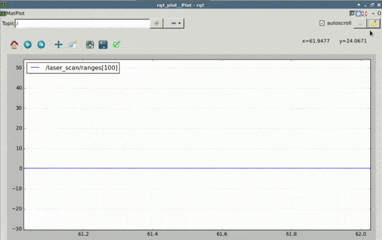
<span class="ign_blue">To summarize:</span><br><br>To use rosbag files, you have to make sure that the original data generator (real robot or simulation) is NOT publishing. Otherwise, you will get really weird data (the collision between the original and the recorded data). You have to also keep in mind that if you are reading from a rosbag, time is finite and cyclical, and therefore, you have to clear the plot area to view all of the time period.To summarize:
To use rosbag files, you have to make sure that the original data generator (real robot or simulation) is NOT publishing. Otherwise, you will get really weird data (the collision between the original and the recorded data). You have to also keep in mind that if you are reading from a rosbag, time is finite and cyclical, and therefore, you have to clear the plot area to view all of the time period.
<b>rosbag</b> is especially useful when you don't have anything in your system (neither real nor simulated robot), and you run a bare <b>roscore</b>. In that situation, you would record all of the topics of the system when <b>you do have</b> either a simulated or real robot with the following command:<br>rosbag is especially useful when you don't have anything in your system (neither real nor simulated robot), and you run a bare roscore. In that situation, you would record all of the topics of the system when you do have either a simulated or real robot with the following command:
rosbag record -aThis command will record <b>ALL</b> the topics that the robot is publishing. Then, you can replay it in a bare roscore system and you will get all of the topics as if you had the robot.This command will record ALL the topics that the robot is publishing. Then, you can replay it in a bare roscore system and you will get all of the topics as if you had the robot.
<font class="ign_red">Before continuing any further, please check that you've done the following:</font><br>* You have stopped the rosbag play by going to the WebShell #2 where it's executing and [CTRL]+[C]* You have unpaused the simulation to have it working as normal:Before continuing any further, please check that you've done the following:
You have stopped the rosbag play by going to the WebShell #2 where it's executing and [CTRL]+[C]
You have unpaused the simulation to have it working as normal:
<table style="float:left;background: #407EAF"><tr><th><p class="transparent">Execute in WebShell #3</p></th></tr></table>|
Execute in WebShell #3 |
|---|
rosservice call /gazebo/unpause_physics "{}"<p style="background:#407EAF;color:white;" id="example-5.2">END **Example 5.2**</p>END Example 5.2
And here you have it. The <b>HollyMolly!</b> The Milenium Falcon! The most important tool for ROS debugging....<b>RVIZ</b>.<br><br>RVIZ is a tool that allows you to visualize <i>Images, PointClouds, Lasers, Kinematic Transformations, RobotModels</i>...The list is endless. You even can define your own markers. It's one of the reasons why ROS got such a great acceptance. Before RVIZ, it was really difficult to know what the Robot was perceiving. And that's the main concept:<br><br>RVIZ is <b>NOT</b> a simulation. I repeat: It's <b>NOT</b> a simulation.<br>RVIZ is a representation of what is being published in the topics, by the simulation or the real robot. And here you have it. The HollyMolly! The Milenium Falcon! The most important tool for ROS debugging....RVIZ.
RVIZ is a tool that allows you to visualize Images, PointClouds, Lasers, Kinematic Transformations, RobotModels...The list is endless. You even can define your own markers. It's one of the reasons why ROS got such a great acceptance. Before RVIZ, it was really difficult to know what the Robot was perceiving. And that's the main concept:
RVIZ is NOT a simulation. I repeat: It's NOT a simulation.
RVIZ is a representation of what is being published in the topics, by the simulation or the real robot.
RVIZ is a really complex tool and it would take you a whole course just to master it. Here, you will get a glimpse of what it can give you.RVIZ is a really complex tool and it would take you a whole course just to master it. Here, you will get a glimpse of what it can give you.
**Remember that you should have unpaused the simulations and stopped the rosbag as described in the rosbag section.**Remember that you should have unpaused the simulations and stopped the rosbag as described in the rosbag section.
1- Type in WebShell #2 the following command:1- Type in WebShell #2 the following command:
<table style="float:left;background: #407EAF"><tr><th><p class="transparent">Execute in WebShell #2</p></th></tr></table>|
Execute in WebShell #2 |
|---|
rosrun rviz rviz2- Then go to the graphical interface to see the RVIZ GUI:2- Then go to the graphical interface to see the RVIZ GUI:
You will be greeted by a window like <a href="#fig-5.9">{Fig-5.9}</a>:You will be greeted by a window like {Fig-5.9}:
<img id="fig-5.9" src="img/rviz_init.jpg"/><br><center> <figcaption>Fig-5.9 - RVIZ Starting Window</figcaption></center>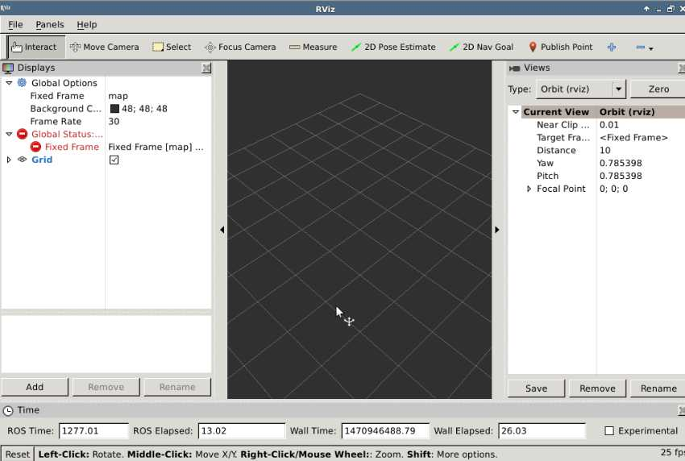
**NOTE: In case you don't see the lower part of Rviz (the Add button, etc.), double-click at the top of the window to maximize it. Then you'll see it properly.**NOTE: In case you don't see the lower part of Rviz (the Add button, etc.), double-click at the top of the window to maximize it. Then you'll see it properly.
You need only to be concerned about a few elements to start enjoying RVIZ.* <b>Central Panel</b>: Here is where all the magic happens. Here is where the data will be shown. It's a 3D space that you can rotate (LEFT-CLICK PRESSED), translate (CENTER MOUSE BUTTON PRESSED) and zoom in/out (LEFT-CLICK PRESSED). * <b>Left Displays Panel</b>: Here is where you manage/configure all the elements that you wish to visualize in the central panel. You only need to use two elements: * In **Global Options**, you have to select the <b>Fixed Frame</b> that suits you for the visualization of the data. It is the reference frame from which all the data will be referred to. * The **Add button**. Clicking here you get all of the types of elements that can be represented in RVIZ.You need only to be concerned about a few elements to start enjoying RVIZ.
**Go to RVIZ in the graphical interface and add a <b>TF</b> element. For that, click "Add" and select the element TF in the list of elements provided, as shown in <a href="#fig-5.10">{Fig-5.10}</a>.**Go to RVIZ in the graphical interface and add a TF element. For that, click "Add" and select the element TF in the list of elements provided, as shown in {Fig-5.10}.
<img id="fig-5.10" src="img/rviz_add.jpg"/><br><center> <figcaption>Fig-5.10 - RVIZ Add element</figcaption></center>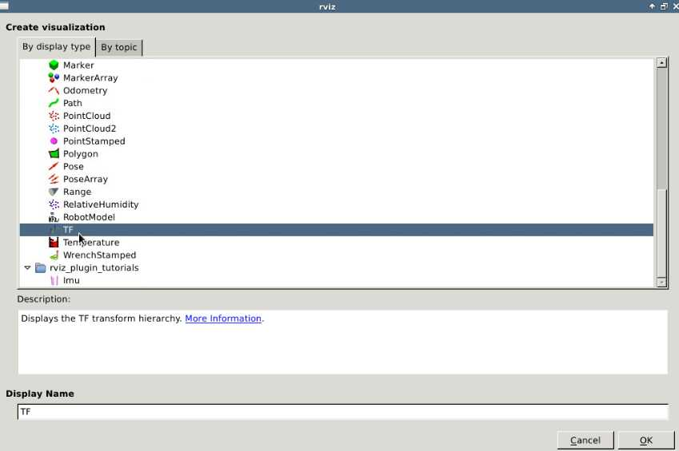
* Go to the RVIZ Left panel, select as Fixed Frame the **<i>iri_wam_link_footprint</i>** and make sure that the **TF** element checkbox is checked. In a few moments, you should see all of the Robots Elements Axis represented in the CENTRAL Panel.* Now, go to a WebShell #1 and enter the command to move the robot:Go to the RVIZ Left panel, select as Fixed Frame the iri_wam_link_footprint and make sure that the TF element checkbox is checked. In a few moments, you should see all of the Robots Elements Axis represented in the CENTRAL Panel.
Now, go to a WebShell #1 and enter the command to move the robot:
<table style="float:left;background: #407EAF"><tr><th><p class="transparent">Execute in WebShell #1</p></th></tr></table>|
Execute in WebShell #1 |
|---|
roslaunch iri_wam_aff_demo start_demo.launchYou should see something like this:You should see something like this:
<figure><img id="fig-5.11" src="img/rviz_unit5.gif"/><br><center> <figcaption>Fig-5.11 - RVIZ TF</figcaption></center></figure>In <a href="#fig-5.11">{Fig-5.11}</a>, you are seeing all of the transformations elements of the IRI Wam Simulation in real-time. This allows you to see exactly what joint transformations are sent to the robot arm to check if it's working properly.In {Fig-5.11}, you are seeing all of the transformations elements of the IRI Wam Simulation in real-time. This allows you to see exactly what joint transformations are sent to the robot arm to check if it's working properly.
* Now press "Add" and select <i>RobotModel</i>, as shown in <a href="#fig-5.12">{Fig-5.12}</a><br><img id="fig-5.12" src="img/robotmodel.jpg"/><center><figcaption>Fig-5.12 - RVIZ Add Robot Model</figcaption></center>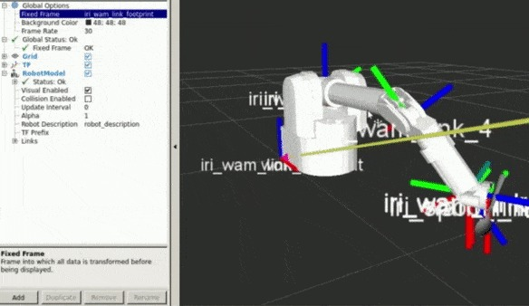
You should see now the 3D model of the robot, as shown in <a href="#fig-5.13">{Fig-5.13}</a>:You should see now the 3D model of the robot, as shown in {Fig-5.13}:
<figure><img id="fig-5.13" src="img/robotmodel.gif"/><br><center><figcaption>Fig-5.13 - RVIZ Robot Model + TF</figcaption></center></figure>Why can't you see the table? Or the bowl? Is there something wrong? Not at all!<br><br>Remember: RVIZ is <b>NOT</b> a simulation, <b>it represents what the TOPICS are publishing</b>. In this case the models that are represented are the ones that the <i>RobotStatePublisher node</i> is publishing in some ROS topics. There is NO node publishing about the bowl or the table.<br><br>Then how can you see the object around? Just like the robot does, through cameras, lasers, and other topic data.<br><br><b>Remember: RVIZ shows what your robot is perceiving, nothing else.</b>Why can't you see the table? Or the bowl? Is there something wrong? Not at all!
Remember: RVIZ is NOT a simulation, it represents what the TOPICS are publishing. In this case the models that are represented are the ones that the RobotStatePublisher node is publishing in some ROS topics. There is NO node publishing about the bowl or the table.
Then how can you see the object around? Just like the robot does, through cameras, lasers, and other topic data.
Remember: RVIZ shows what your robot is perceiving, nothing else.
<p style="background:#EE9023;color:white;" id="ex-5.4">**Exercise 5.4**</p>Exercise 5.4
Add to RVIZ the visualization of the following elements:* What the RGB camera from the Kinect is seeing. **TIP: The topic it has to read is /camera/rgb/image_raw. It might take a while to load the images, so just be patient.*** What the Laser mounted at the end effector of the robot arm is registering. **TIP: You can adjust the appearance of the laser points through the element in the LEFT PANEL.*** What the PointCloud Camera / Kinect mounted in front of the robot arm is registering. **TIP: You can adjust the appearance of the pointcloud points through the element in the LEFT PANEL. You should select points for better performance.**Add to RVIZ the visualization of the following elements:
What the RGB camera from the Kinect is seeing. TIP: The topic it has to read is /camera/rgb/image_raw. It might take a while to load the images, so just be patient.
What the Laser mounted at the end effector of the robot arm is registering. TIP: You can adjust the appearance of the laser points through the element in the LEFT PANEL.
What the PointCloud Camera / Kinect mounted in front of the robot arm is registering. TIP: You can adjust the appearance of the pointcloud points through the element in the LEFT PANEL. You should select points for better performance.
**TIP: You should have a similar result as the one depicted beneath**:<br><font style="color:red;"><b>Notice that activating the pointcloud has a huge impact on the system performance. This is due to the huge quantity of data being represented. It's highly recommended to only use it with a high-end graphics card.</b></font><br><br>Play around with the type of representations of the laser, size, and so on, as well as with the pointcloud configuration.TIP: You should have a similar result as the one depicted beneath:
Notice that activating the pointcloud has a huge impact on the system performance. This is due to the huge quantity of data being represented. It's highly recommended to only use it with a high-end graphics card.
Play around with the type of representations of the laser, size, and so on, as well as with the pointcloud configuration.
<p style="background:#EE9023;color:white;" id="ex-5.4">END **Exercise 5.4**</p>END Exercise 5.4
<table style="width:100%"><tr><th><figure><img id="fig-5.14" src="img/rviz_finex.gif"/><br><center> <figcaption>Fig-5.14 - RVIZ Robot with camera and laser</figcaption></center></figure></th><th><figure><img id="fig-5.15" src="img/rviz_finex_pointcloud.gif"/><br><center> <figcaption>Fig-5.15 - RVIZ Robot with camera, laser, and point-cloud</figcaption></center></figure></th> </tr></table>
 |
|
|---|
Congratulations! Now you are ready to debug any AstroMech out there! Congratulations! Now you are ready to debug any AstroMech out there!
roswtf: http://wiki.ros.org/roswtfRos Logging System: http://wiki.ros.org/rospy/Overview/Loggingrqt_console: http://wiki.ros.org/rqt_consolerqt_plot: http://wiki.ros.org/rqt_plotrqt_graph: http://wiki.ros.org/rqt_graphRosbag: http://wiki.ros.org/rosbagRviz: http://wiki.ros.org/rvizroswtf: http://wiki.ros.org/roswtf
Ros Logging System: http://wiki.ros.org/rospy/Overview/Logging
rqt_console: http://wiki.ros.org/rqt_console
rqt_plot: http://wiki.ros.org/rqt_plot
rqt_graph: http://wiki.ros.org/rqt_graph
Rosbag: http://wiki.ros.org/rosbag
Rviz: http://wiki.ros.org/rviz